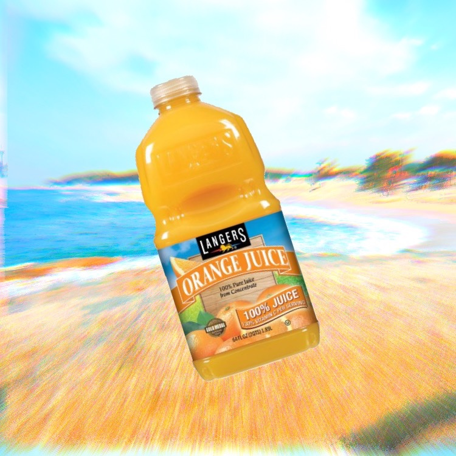
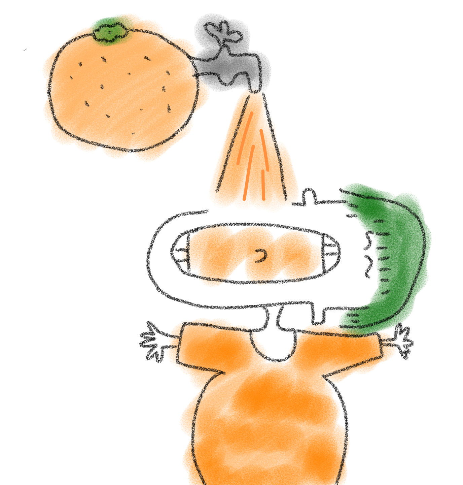

희미한 기억이지만 엉뚱하고 재미있던
나의 꿈 이야기를 하려고 한다.
이야기는 모두 허구이며 나의 무의식에서 나온
상상력을 기반으로 흘러간다.
#1 "Never Ending Orange Juice
 
술을 먹고 잠들어서인지 갈증이 너무 심하다. 밖으로 나가 마트로 향하는데 과일가게에서 오렌지주스를 판다. 나는 갈증을 얼른 해결하려고 그냥 오렌지주스를 먹었다. 근데 웬열, 엄청 급하게 꿀꺽꿀꺽 마셨는데 양이 그대로다. 나는 계속되는 갈증에 오렌지주스를 배가 터지도록 먹었지만 다시 채워지는 신기한 오렌지주스였다